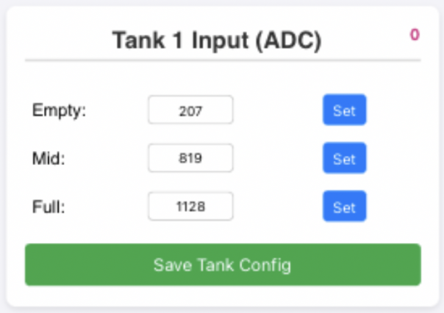
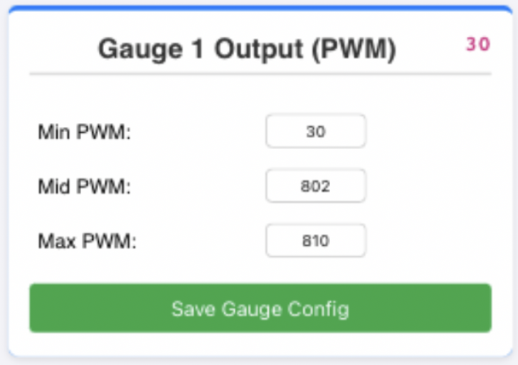

Fuel Tank Trainer Calibration Manual
Part 1: Quick Start Guide
1. Wi-Fi Connection & Access
The system hosts its own wireless network to provide a visual calibration dashboard. Please follow these steps to connect:
- Power Up: Supply power to the Fuel Tank Trainer.
- Connect Wi-Fi: Open the Wi-Fi settings on your device, search for, and connect to the SSID: Fuel_Tank_Trainer.
- Password: Enter the password: 12345678.
- Access Dashboard: Open any web browser and enter the following IP address in the URL bar: 192.168.4.1.
2. Startup Sweep Self-Test
- Every time the system is powered on, it automatically enters a 5-second gauge sweep mode. All connected physical gauge needles will smoothly sweep from their minimum position (Empty) to their maximum position (Full) and drop back down.
- Sweep Test can also trigger manually in the calibration dashboard.
3. Calibration Workflow
- Tank Sensor Calibration (Input): When your physical fuel tank is at Empty, Mid (50%), and Full levels, click the corresponding Set button on the web dashboard to capture the real-time Sensor value. Or manually input value and click Save Tank Config to apply.
- Gauge Calibration (Output): On the web dashboard, manually adjust the Min PWM, Mid PWM, and Max PWM values while watching your physical gauge. Tweak the numbers until the needle points perfectly to E, 1/2, and F marks, then click Save Gauge Config. Check Technical Reference for Gauge Output mapping.


Part 2: Technical Reference
1. Hardware Pin Configuration
The hardware input/output mapping is defined as follows:
- Tank 1: GPIO 6
- Tank 2: GPIO 0
- Tank 3: GPIO 1
- Tank 4: GPIO 2
- Gauge 1 (Mapped to Tank 1): GPIO 16
- Gauge 2 (Mapped to Gauge3 Tank 2): GPIO 21
- Gauge 3 (Mapped to Gauge3 Tank 3): GPIO 22
- Gauge 4 (Mapped to Gauge3 Tank 4): GPIO 23
- Gauge 5 (Mapped to Gauge2 Tank 2 or 3): GPIO 18
- Gauge 5 Output Control Pins (Internal Pull-Up enabled):
- Select Tank 2: GPIO 20 (Active LOW)
- Select Tank 3: GPIO 19 (Active LOW)
2. HTTP API Protocol
The built-in Web Server provides RESTful HTTP GET endpoints for front-end interaction:
API Endpoint | Parameters | Description |
/status | None | Retrieves a JSON payload containing all current ADC, PWM, and configuration parameters. |
/setTank | id(0-3), e(empty), m(mid), f(full) | Saves the 3-point ADC calibration values for the specified tank to NVS memory. |
/setGauge | id(0-4), min(minimum), mid(middle), max(maximum) | Saves the 3-point PWM calibration values for the specified gauge to NVS memory. |
/calibrate | id(0-3), type('empty'|'mid'|'full') | Commands the system to record the current real-time ADC value as the specified calibration type. |
/test | None | Triggers the global 5-second gauge sweep test animation. |
3. JSON Payload Memory Map
When the front-end calls the /status endpoint, the system returns a JSON payload structured as follows:
JSON
{
"tanks": [
{"adc": 2048, "e": 20, "m": 2000, "f": 4000},
{"adc": 1500, "e": 50, "m": 1800, "f": 3800},
{"adc": 0, "e": 20, "m": 2000, "f": 4000},
{"adc": 0, "e": 20, "m": 2000, "f": 4000}
],
"gauges": [
{"pwm": 200, "min": 40, "mid": 200, "max": 410},
{"pwm": 150, "min": 50, "mid": 210, "max": 420},
{"pwm": 40, "min": 40, "mid": 200, "max": 410},
{"pwm": 40, "min": 40, "mid": 200, "max": 410},
{"pwm": 0, "min": 40, "mid": 200, "max": 410}
]
}
Parsing Guide:
- The tanks array contains 4 objects corresponding to Tanks 1-4. adc is the current real-time sensor reading (after a 15-sample smoothing filter). e, m, and f are the saved Empty, Mid, and Full calibration thresholds.
- The gauges array contains 5 objects corresponding to Gauges 1-5. pwm is the real-time duty cycle currently being output. min, mid, and max are the saved gauge calibration boundaries.
4. Mapping Algorithm
The system eschews simple linear mapping in favor of a Midpoint-based piecewise linear interpolation. The algorithm automatically detects whether the sensor utilizes forward resistance (Empty -> Full = resistance increases) or inverted resistance (Empty -> Full = resistance decreases):
- If the real-time adc ≤ Mid, the system uses linear interpolation based on the slope between Empty and Mid.
- If the real-time adc > Mid, the system uses linear interpolation based on the slope between Mid and Full.
- Safety Clamp: If the calculated output exceeds the calibrated extreme boundaries, the system enforces a hard clamp at the software level to prevent hardware coil damage.